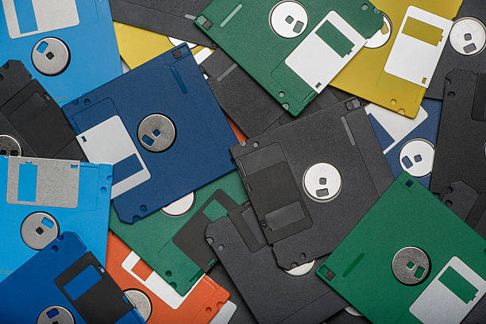

Década de 1970 - Chips, Disquetes e Ethernet

- 1970 - Intel 1103 - Primeiro Chip de Memória Dinâmica de Acesso (DRAM), impulsionando a capacidade de armazenamento dos computadores.
- 1970 -Disquete - Primeira forma de Compartilhamento de Dados entre computadores, tornando o transporte e compartilhamento de informações mais práticos.
- 1973- Ethernet - foi criado em Palo Alto, com a ideia inicial de criar uma forma eficinete de conectar e permitir a troca de dados entre máquinas remotas de uma maneira confiavel.
- 1975- Microprocessador 8080 - possuía um conjunto abrangente de instruções e velocidades de clock de até 2MHz e equipou o MITS Altair 8800.